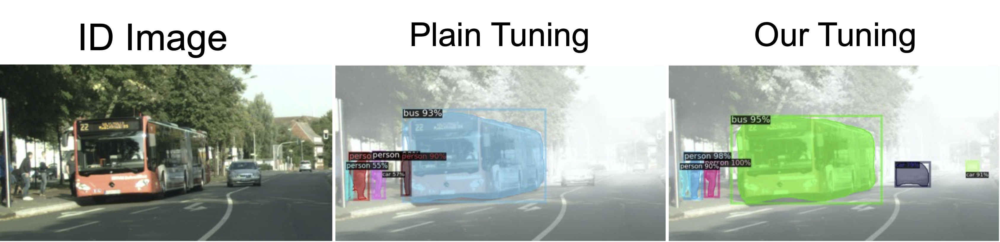

Mind the Backbone: Minimizing Backbone Distortion for Robust Object Detection
Kuniaki Saito1 Donghyun Kim2 Piotr Teterwak1 Rogerio Feris2 Kate Saenko1, 3
1. Boston University 2. MIT-IBM Watson AI Lab 3. Meta
Paper | Code

Abstract
Building object detectors that are robust to domain shifts is critical for real-world applications. Prior approaches fine-tune a pre-trained backbone and risk overfitting it to in-distribution (ID) data and distorting features useful for out-of-distribution (OOD) generalization. We propose to use Relative Gradient Norm (RGN) as a way to measure the vulnerability of a backbone to feature distortion, and show that high RGN is indeed correlated with lower OOD performance. Our analysis of RGN yields interesting findings: some backbones lose OOD robustness during fine-tuning, but others gain robustness because their architecture prevents the parameters from changing too much from the initial model. Given these findings, we present recipes to boost OOD robustness for both types of backbones. Specifically, we investigate regularization and architectural choices for minimizing gradient updates so as to prevent the tuned backbone from losing generalizable features. Our proposed techniques complement each other and show substantial improvements over baselines on diverse architectures and datasets.
Paper
arxiv, 2023.
Citation
Kuniaki Saito, Donghyun Kim, Piotr Teterwak, Rogerio Feris, Kate Saenko
"Mind the Backbone: Minimizing Backbone Distortion for Robust Object Detection".
Bibtex
What is domain generalization?

Domain generalization refers to the ability of a machine learning model to generalize its knowledge and perform well on new, unseen domains that differ from the domains it was trained on. In traditional machine learning settings, models are trained and tested on data from the same domain, assuming that the training and testing data follow the same distribution. However, in real-world scenarios, the distribution of data can vary across different domains, such as different geographical locations, different times, or different sources. As shown in Fig.1, we aim to train a model generalizable on diverse domains given a single domain as training data.
Model distortion matters in domain generalization
The task of domain generalization is actively explored in image classification. One effective way is to use a model pre-trained with large scale dataset and fine-tune it on the downstream task. The model has the knowledge about diverse categories and it learns invariance across different domains. But, if we naively fine-tune the model, the model may perform well on the domain of training data, but will not perform well on OOD. The backbone can lose generalizable representations by updating parameters too much to adapt to the training data. So, distorting model parameters can decrease performance on OOD. On the other hand, if we freeze the model parameters and only tune the linear head, model will not be distorted and may show high accuracy in OOD. But, it may not perform well near ID because the backbone is not adapted to the training data. An important message from work on image classification is that we need to care about the model distortion in fine-tuning a model. We analyze the behavior of backbone models in the object detection and propose simple techiques to train a model generalizable in diverse domains.
Analysis on Model Distortion
First, we start from comparing two approaches: freezing backbone (pre-trained model) on top of detector and plain fine-tuning. Fig. 3 shows that network like ResNet50 shows significant decrease in OOD by updating backbone while other network gain performance by fine-tuning.
We attempt to quantify the model distortion by relative gradient norm, which is computing the norm of gradient over that of parameters. Gradient is computed on detection loss. We see that ResNet50 suffers from large model distortion while other two have relatively small RGN across many layers.
Proposed Method
Given the intuition from the analysis, we propose to regularize the backbone so that it can keep close to the initial parameters during fine-tuning. We propose to apply both architecture- and objective-level regularization to achieve it. See our paper for more details.
Summary of Results
We investigate the performance of our model on divese networks and datasets. In summary, we find that the proposed fine-tuning is effective for diverse backbones as shown in Fig. 5. Also, as in Fig. 6, it is effective for transformer-based backbone, image corruptions, and long-tailed object detection.